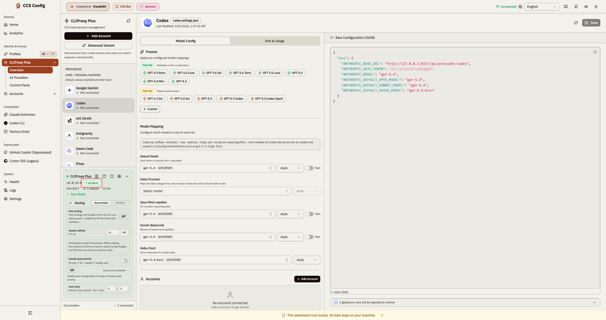

Hybrid evidence: proxy uptime measured during a real install, installer log order, and the update badge's new pending state. Captured locally against CLIProxy Plus 8.0.53-0 → 8.0.56-0 on macOS arm64.
| Before (8.11.1) | After (this branch) | |
|---|---|---|
| Proxy state during the ~30s download | stopped the whole time | running |
| Downtime | ~31s (21:04:53 → 21:05:24) | ~1s (swap + restart only) |
| Download fails | proxy already stopped | proxy untouched |
Before: proxy-status polled every 2s after clicking the badge
21:05:03 {"running":false} ... 10 samples ... 21:05:22 {"running":false}
21:05:24 {"running":true, ...}
After: proxy-status polled every 1s during the badge install
17 x 21:16:07.. 8.0.53-0 "running":true <- downloading, proxy still serving
1 x 21:16:25 8.0.56-0 "running":false <- swap
1 x 21:16:26 8.0.56-0 "running":true
Before After [i] Stopping running CLIProxy before update [i] Downloading CLIProxy Plus v8.0.56-0... [i] Downloading CLIProxy Plus v8.0.56-0... [cliproxy] Extracted: cli-proxy-api-plus -> .cliproxy-install-*/ [cliproxy] Extracted: ... [i] Stopping running CLIProxy before update... [OK] CLIProxy Plus ready [OK] CLIProxy Plus ready
Before clicking: the badge offers the update.

While installing: spinner, aria-busy, "Updating..." tooltip, repeat clicks ignored. The status dot stays green because the proxy is still running.
After: the widget shows v8.0.56-0 and the badge is gone.
binary-manager-install.test.ts 10 pass (2 new; both fail on the old ordering) binary-installer-atomic.test.ts 11 pass (2 new) cliproxy-dashboard-install-service 6 pass ui validate (typecheck, lint, format) pass